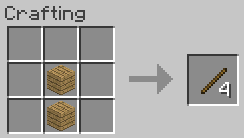

mesa de crafteo con dos
mesa de crafteo con dos  tablones o talando un árbol por completo
tablones o talando un árbol por completo
Los palos son uno de los materiales más importantes del juego ya que sirven para crear todas las herramientas
Los palos se consiguen principalmente en una mesa de crafteo con dos tablones o talando un árbol por completo
